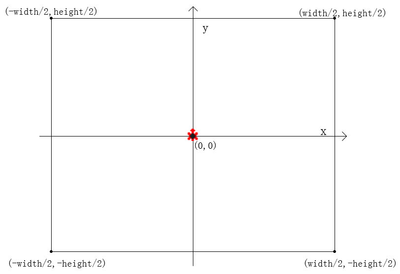
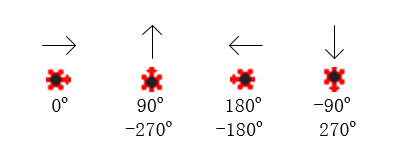
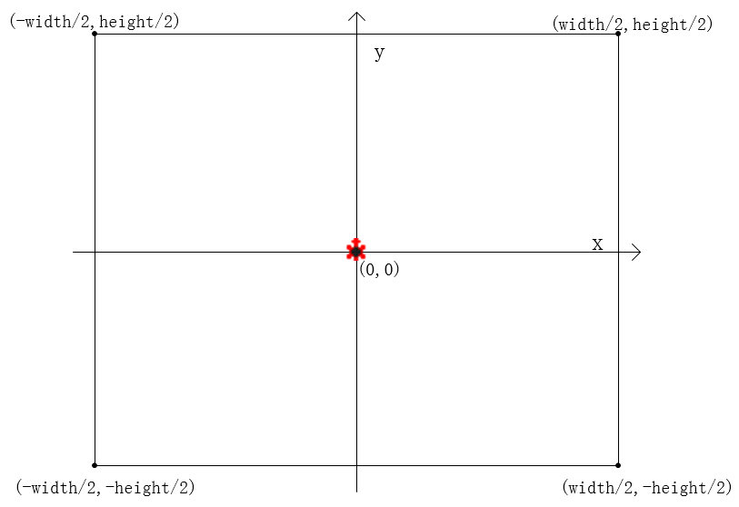
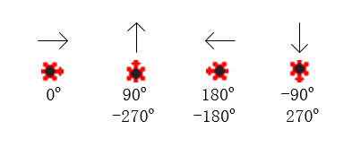

主页-＞库函数目录-＞坐标系和海龟朝向说明 海龟初始位置坐标为（0,0），横坐标正向为屏幕向右方向，纵坐标正向为屏幕向上方向，见下图：  0度表示海龟朝向屏幕正右方, 90度表示海龟朝向屏幕正上方, -90度表示海龟朝向屏幕正下方，见下图：  注意：在使用math.h中的sin等三角函数时，需要先将角度转换为弧度。
海龟初始位置坐标为（0,0），横坐标正向为屏幕向右方向，纵坐标正向为屏幕向上方向，见下图：  0度表示海龟朝向屏幕正右方, 90度表示海龟朝向屏幕正上方, -90度表示海龟朝向屏幕正下方，见下图：  注意：在使用math.h中的sin等三角函数时，需要先将角度转换为弧度。